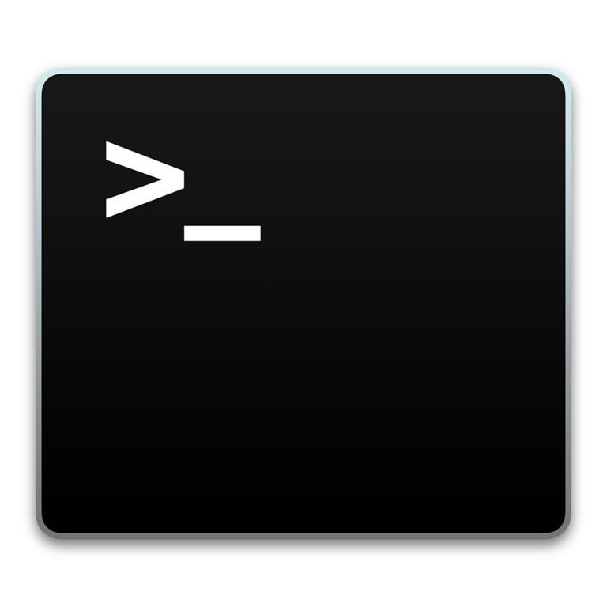
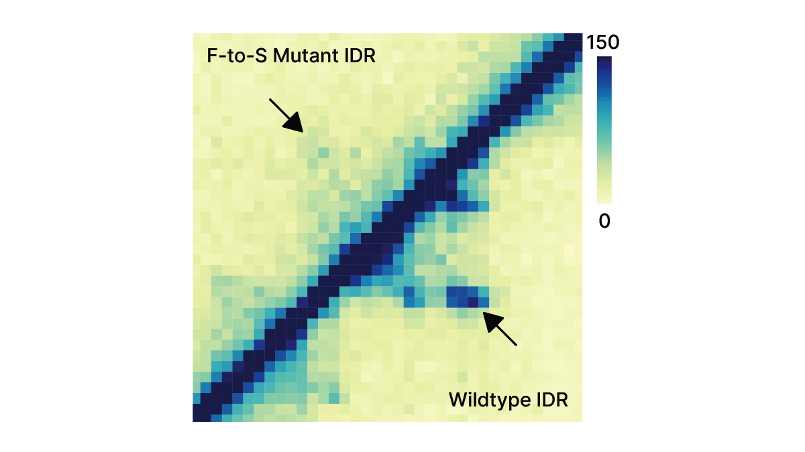
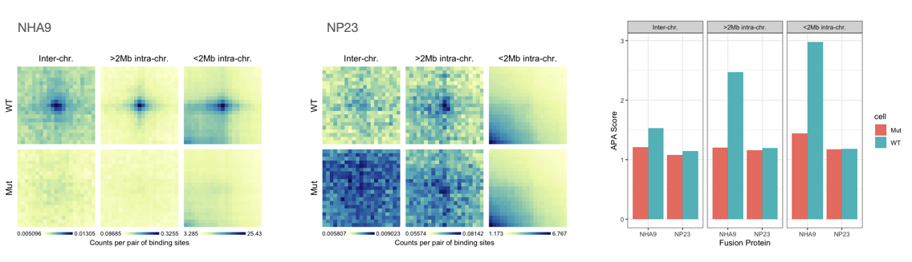
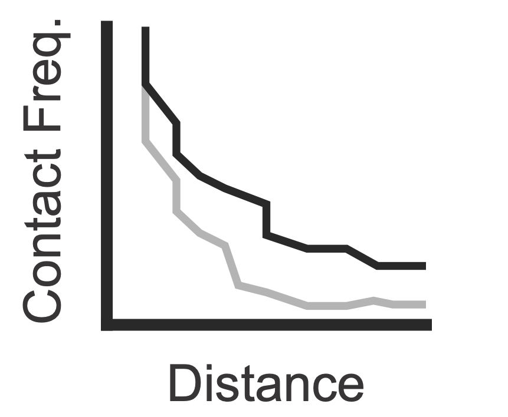
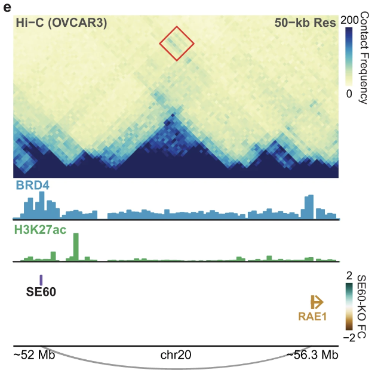
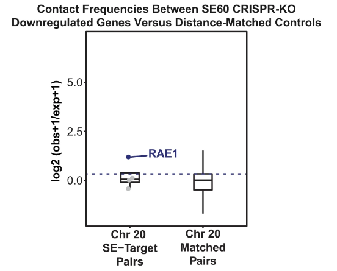
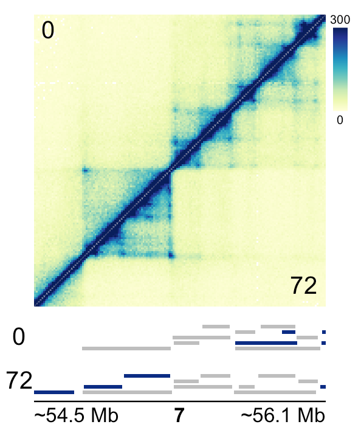

GRanges object with 1 range and 0 metadata columns:
seqnames ranges strand
<Rle> <IRanges> <Rle>
[1] chr1 1-10000 *
-------
seqinfo: 1 sequence from an unspecified genome; no seqlengthsMariner
BCB Student Seminar
Eric Davis
Phanstiel Lab
09/01/2022
Mariner
“Explore the Hi-C’s”
BCB Student Seminar
Eric Davis
Phanstiel Lab
09/01/2022
Why do we need this?
Why do we need this?

Why do we need this?
| Software | Language | Extracting | Aggregating | Range Operations | Differential Analysis | Visualization | ||||
|---|---|---|---|---|---|---|---|---|---|---|
| Pixels | Matrices | Custom | Matrices | TADs/Stripes | Custom | |||||
| Juicer tools |
 |
✅ | ✅ | ❌ | ✅ | ❌ | ❌ | ❌ | ❌ | ❌ |
| HiCmapTools | ✅ | ✅ | ❌ | ✅ | ✅ | ❌ | ❌ | ❌ | ⚠️ | |
| coolpup.py |
|
❌ | ❌ | ❌ | ✅ | ✅ | ❌ | ❌ | ❌ | ⚠️ |
| Juice Box | ❌ | ❌ | ❌ | ❌ | ❌ | ❌ | ❌ | ❌ | ✅ | |
| HiGlass | ❌ | ❌ | ❌ | ❌ | ❌ | ❌ | ❌ | ❌ | ✅ | |
| Bedtools | ❌ | ❌ | ❌ | ❌ | ❌ | ❌ | ✅ | ❌ | ❌ | |
Hi-C tools are dispersed across programming languages/environments.
- Steep learning curve
- Difficult to create reproducible workflow.
Some functionality is either impossible or impractical.
Advantages of the Bioconductor environment
Bioconductor environment
- Keep all analyses in R
- Classes for working with genomic data
Bioconductor environment
- Keep all analyses in R
- Classes for working with genomic data
## Genomic ranges
library(GenomicRanges)
GRanges("chr1:1-10000")
## Alternate method
GRanges(seqnames = c("chr1", "chr2"),
ranges = IRanges(start = c(1, 30000),
end = c(10000, 60000)))GRanges object with 2 ranges and 0 metadata columns:
seqnames ranges strand
<Rle> <IRanges> <Rle>
[1] chr1 1-10000 *
[2] chr2 30000-60000 *
-------
seqinfo: 2 sequences from an unspecified genome; no seqlengthsBioconductor environment
- Keep all analyses in R
- Classes for working with genomic data
## Genomic ranges
library(GenomicRanges)
GRanges("chr1:1-10000")
## Alternate method
GRanges(seqnames = c("chr1", "chr2"),
ranges = IRanges(start = c(1, 30000),
end = c(10000, 60000)))
## Genomic interactions
library(InteractionSet)
GInteractions(anchor1 = GRanges("chr1:1-10000"),
anchor2 = GRanges("chr1:1-10000"))GInteractions object with 1 interaction and 0 metadata columns:
seqnames1 ranges1 seqnames2 ranges2
<Rle> <IRanges> <Rle> <IRanges>
[1] chr1 1-10000 --- chr1 1-10000
-------
regions: 1 ranges and 0 metadata columns
seqinfo: 1 sequence from an unspecified genome; no seqlengthsMariner functionality
Manipulating/Merging Pairs
Manipulating/Merging Pairs
Manipulating/Merging Pairs
Manipulating/Merging Pairs
Generating Pairs from Ranges
Extracting/Aggregating Interactions
Extracting/Aggregating Interactions
Workflows

Differential loop calling
Ahn et al. (2021)

Inter/Intrachromosomal pile-up analysis
Differential loop calling
In collaboration with Wang Lab, Sarah Parker, Isha Sahasrabudhe, Yoseli Quiroga and JP Flores.

Characterizing loop signal decay
Inter/Intrachromosomal pile-up analysis
Differential loop calling
 
Target contact enrichment
Characterizing loop signal decay
Inter/Intrachromosomal pile-up analysis
Differential loop calling
Kelly et al. (2022)

Identifying de Novo loops/TADs
Target contact enrichment
Characterizing loop signal decay
Inter/Intrachromosomal pile-up analysis
Differential loop calling
In collaboration with Marielle Bond
Identifying de Novo loops/TADs
Target contact enrichment
Characterizing loop signal decay
Inter/Intrachromosomal pile-up analysis
Differential loop calling
In collaboration with Marielle Bond
Example: Calling de novo TADs
Prepare the data
## Load required packages
library(data.table)
library(mariner)
library(InteractionSet)
library(plyranges)
## List TAD files for each timepoint
bedpeFiles <-
list.files(path = "data/loops",
full.names = TRUE)
## Read in data
tadList <-
bedpeFiles |>
lapply(fread, skip=2, select=1:6) |>
lapply(as_ginteractions) |>
setNames(gsub("[^0-9]+", "", bedpeFiles))
## Since the anchors are redundant,
## define the loop at the tip of each
## domain
giList <-
lapply(tadList, \(x, binSize = 10e03) {
## Update the first anchor
newAnchor1 <-
anchors(x, 'first') |>
mutate(end = start + binSize)
## Update the second anchor
newAnchor2 <-
anchors(x, 'second') |>
mutate(start = end - binSize)
## Form new GInteractions object
GInteractions(anchor1 = newAnchor1,
anchor2 = newAnchor2,
name = paste0("TAD_", 1:length(x)))
})Prepare the data
Prepare the data
$`0`
GInteractions object with 10607 interactions and 1 metadata column:
seqnames1 ranges1 seqnames2 ranges2 |
<Rle> <IRanges> <Rle> <IRanges> |
[1] 9 42730000-42740000 --- 9 43255000-43265000 |
[2] 9 15730000-15740000 --- 9 17485000-17495000 |
[3] 9 84375000-84385000 --- 9 85600000-85610000 |
[4] 9 70740000-70750000 --- 9 71250000-71260000 |
[5] 9 63545000-63555000 --- 9 63905000-63915000 |
... ... ... ... ... ... .
[10603] 8 102420000-102430000 --- 8 102515000-102525000 |
[10604] 8 22925000-22935000 --- 8 23005000-23015000 |
[10605] 8 130130000-130140000 --- 8 130180000-130190000 |
[10606] 8 11410000-11420000 --- 8 11465000-11475000 |
[10607] 8 93495000-93505000 --- 8 93550000-93560000 |
name
<character>
[1] TAD_1
[2] TAD_2
[3] TAD_3
[4] TAD_4
[5] TAD_5
... ...
[10603] TAD_10603
[10604] TAD_10604
[10605] TAD_10605
[10606] TAD_10606
[10607] TAD_10607
-------
regions: 20319 ranges and 0 metadata columns
seqinfo: 23 sequences from an unspecified genome; no seqlengths
$`360`
GInteractions object with 9651 interactions and 1 metadata column:
seqnames1 ranges1 seqnames2 ranges2 |
<Rle> <IRanges> <Rle> <IRanges> |
[1] 9 42730000-42740000 --- 9 43255000-43265000 |
[2] 9 28140000-28150000 --- 9 28465000-28475000 |
[3] 9 84375000-84385000 --- 9 85600000-85610000 |
[4] 9 27715000-27725000 --- 9 28075000-28085000 |
[5] 9 63545000-63555000 --- 9 63900000-63910000 |
... ... ... ... ... ... .
[9647] 8 22925000-22935000 --- 8 23005000-23015000 |
[9648] 8 124750000-124760000 --- 8 124820000-124830000 |
[9649] 8 94720000-94730000 --- 8 94790000-94800000 |
[9650] 8 124650000-124660000 --- 8 124730000-124740000 |
[9651] 8 125235000-125245000 --- 8 125320000-125330000 |
name
<character>
[1] TAD_1
[2] TAD_2
[3] TAD_3
[4] TAD_4
[5] TAD_5
... ...
[9647] TAD_9647
[9648] TAD_9648
[9649] TAD_9649
[9650] TAD_9650
[9651] TAD_9651
-------
regions: 18529 ranges and 0 metadata columns
seqinfo: 23 sequences from an unspecified genome; no seqlengths
$`4320`
GInteractions object with 12468 interactions and 1 metadata column:
seqnames1 ranges1 seqnames2 ranges2 |
<Rle> <IRanges> <Rle> <IRanges> |
[1] 9 10030000-10040000 --- 9 12535000-12545000 |
[2] 9 42730000-42740000 --- 9 43255000-43265000 |
[3] 9 17515000-17525000 --- 9 18890000-18900000 |
[4] 9 15770000-15780000 --- 9 17475000-17485000 |
[5] 9 73200000-73210000 --- 9 74670000-74680000 |
... ... ... ... ... ... .
[12464] 8 130435000-130445000 --- 8 130510000-130520000 |
[12465] 8 124755000-124765000 --- 8 124830000-124840000 |
[12466] 8 129940000-129950000 --- 8 130005000-130015000 |
[12467] 8 2730000-2740000 --- 8 2790000-2800000 |
[12468] 8 97645000-97655000 --- 8 97710000-97720000 |
name
<character>
[1] TAD_1
[2] TAD_2
[3] TAD_3
[4] TAD_4
[5] TAD_5
... ...
[12464] TAD_12464
[12465] TAD_12465
[12466] TAD_12466
[12467] TAD_12467
[12468] TAD_12468
-------
regions: 23800 ranges and 0 metadata columns
seqinfo: 23 sequences from an unspecified genome; no seqlengthsCluster and merge pairs
MergedGInteractions object with 841 interactions and 0 metadata columns:
seqnames1 ranges1 seqnames2 ranges2
<Rle> <IRanges> <Rle> <IRanges>
[1] 11 98435000-98445000 --- 11 99005000-99015000
[2] 10 84555000-84565000 --- 10 86075000-86085000
[3] 10 52260000-52270000 --- 10 52770000-52780000
[4] 12 38130000-38140000 --- 12 38300000-38310000
[5] 12 60105000-60115000 --- 12 60240000-60250000
... ... ... ... ... ...
[837] 13 106363333-106373333 --- 13 106653333-106663333
[838] 16 51487500-51497500 --- 16 51875000-51885000
[839] 5 120745000-120755000 --- 5 121912500-121922500
[840] 8 76472500-76482500 --- 8 77315000-77325000
[841] 8 46070000-46080000 --- 8 46155000-46165000
-------
regions: 1680 ranges and 0 metadata columns
seqinfo: 23 sequences from an unspecified genome; no seqlengthsCloser look at the MergedGInteractions object
[1] "Mean of modes"MergedGInteractions object with 6 interactions and 0 metadata columns:
seqnames1 ranges1 seqnames2 ranges2
<Rle> <IRanges> <Rle> <IRanges>
[1] 8 59142500-59152500 --- 8 59987500-59997500
[2] 13 106363333-106373333 --- 13 106653333-106663333
[3] 16 51487500-51497500 --- 16 51875000-51885000
[4] 5 120745000-120755000 --- 5 121912500-121922500
[5] 8 76472500-76482500 --- 8 77315000-77325000
[6] 8 46070000-46080000 --- 8 46155000-46165000
-------
regions: 1680 ranges and 0 metadata columns
seqinfo: 23 sequences from an unspecified genome; no seqlengths[[1]]
seqnames1 start1 end1 width1 strand1 seqnames2 start2 end2
1: 8 59142500 59152500 10001 * 8 59987500 59997500
2: 8 59142500 59152500 10001 * 8 59987500 59997500
width2 strand2 name src
1: 10001 * TAD_9242 360
2: 10001 * TAD_11901 4320
[[2]]
seqnames1 start1 end1 width1 strand1 seqnames2 start2 end2
1: 13 106363333 106373333 10001 * 13 106653333 106663333
2: 13 106363333 106373333 10001 * 13 106653333 106663333
3: 13 106363333 106373333 10001 * 13 106653333 106663333
width2 strand2 name src
1: 10001 * TAD_2357 4320
2: 10001 * TAD_2367 4320
3: 10001 * TAD_2465 4320
[[3]]
seqnames1 start1 end1 width1 strand1 seqnames2 start2 end2
1: 16 51487500 51497500 10001 * 16 51875000 51885000
2: 16 51487500 51497500 10001 * 16 51875000 51885000
width2 strand2 name src
1: 10001 * TAD_3461 4320
2: 10001 * TAD_3699 4320
[[4]]
seqnames1 start1 end1 width1 strand1 seqnames2 start2 end2
1: 5 120745000 120755000 10001 * 5 121912500 121922500
2: 5 120745000 120755000 10001 * 5 121912500 121922500
width2 strand2 name src
1: 10001 * TAD_9381 4320
2: 10001 * TAD_9384 4320
[[5]]
seqnames1 start1 end1 width1 strand1 seqnames2 start2 end2
1: 8 76472500 76482500 10001 * 8 77315000 77325000
2: 8 76472500 76482500 10001 * 8 77315000 77325000
width2 strand2 name src
1: 10001 * TAD_11893 4320
2: 10001 * TAD_11897 4320
[[6]]
seqnames1 start1 end1 width1 strand1 seqnames2 start2 end2
1: 8 46070000 46080000 10001 * 8 46155000 46165000
2: 8 46070000 46080000 10001 * 8 46155000 46165000
width2 strand2 name src
1: 10001 * TAD_11943 4320
2: 10001 * TAD_11961 4320MergedGInteractions object with 6 interactions and 1 metadata column:
seqnames1 ranges1 seqnames2 ranges2 |
<Rle> <IRanges> <Rle> <IRanges> |
[1] 8 59142500-59152500 --- 8 59987500-59997500 |
[2] 13 106363333-106373333 --- 13 106653333-106663333 |
[3] 16 51487500-51497500 --- 16 51875000-51885000 |
[4] 5 120745000-120755000 --- 5 121912500-121922500 |
[5] 8 76472500-76482500 --- 8 77315000-77325000 |
[6] 8 46070000-46080000 --- 8 46155000-46165000 |
list.name
<list>
[1] TAD_9242,TAD_11901
[2] TAD_2357,TAD_2367,TAD_2465
[3] TAD_3461,TAD_3699
[4] TAD_9381,TAD_9384
[5] TAD_11893,TAD_11897
[6] TAD_11943,TAD_11961
-------
regions: 1680 ranges and 0 metadata columns
seqinfo: 23 sequences from an unspecified genome; no seqlengthsCalling de novo with subsetBySource()
[1] "0" "360" "4320"$`0`
MergedGInteractions object with 21 interactions and 1 metadata column:
seqnames1 ranges1 seqnames2 ranges2 |
<Rle> <IRanges> <Rle> <IRanges> |
[1] 11 98435000-98445000 --- 11 99005000-99015000 |
[2] 10 84555000-84565000 --- 10 86075000-86085000 |
[3] 10 52260000-52270000 --- 10 52770000-52780000 |
[4] 12 38130000-38140000 --- 12 38300000-38310000 |
[5] 12 60105000-60115000 --- 12 60240000-60250000 |
... ... ... ... ... ... .
[17] 6 73740000-73750000 --- 6 75215000-75225000 |
[18] X 75030000-75040000 --- X 75370000-75380000 |
[19] 8 3240000-3250000 --- 8 6330000-6340000 |
[20] 8 54585000-54595000 --- 8 55410000-55420000 |
[21] 20 54982500-54992500 --- 20 55252500-55262500 |
list.name
<list>
[1] TAD_458
[2] TAD_967
[3] TAD_1016
[4] TAD_1617
[5] TAD_1816
... ...
[17] TAD_8559
[18] TAD_9908
[19] TAD_10134
[20] TAD_10152
[21] TAD_5091,TAD_5218
-------
regions: 1680 ranges and 0 metadata columns
seqinfo: 23 sequences from an unspecified genome; no seqlengths
$`360`
MergedGInteractions object with 22 interactions and 1 metadata column:
seqnames1 ranges1 seqnames2 ranges2 |
<Rle> <IRanges> <Rle> <IRanges> |
[1] 11 54550000-54560000 --- 11 56815000-56825000 |
[2] 11 90170000-90180000 --- 11 90250000-90260000 |
[3] 10 89795000-89805000 --- 10 90725000-90735000 |
[4] 12 57960000-57970000 --- 12 62200000-62210000 |
[5] 15 52765000-52775000 --- 15 55170000-55180000 |
... ... ... ... ... ... .
[18] 6 97430000-97440000 --- 6 99165000-99175000 |
[19] 7 67365000-67375000 --- 7 70165000-70175000 |
[20] X 56780000-56790000 --- X 58245000-58255000 |
[21] X 63250000-63260000 --- X 63555000-63565000 |
[22] X 147850000-147860000 --- X 147995000-148005000 |
list.name
<list>
[1] TAD_393
[2] TAD_726
[3] TAD_905
[4] TAD_1348
[5] TAD_2285
... ...
[18] TAD_7847
[19] TAD_8430
[20] TAD_8975
[21] TAD_8988
[22] TAD_9094
-------
regions: 1680 ranges and 0 metadata columns
seqinfo: 23 sequences from an unspecified genome; no seqlengths
$`4320`
MergedGInteractions object with 63 interactions and 1 metadata column:
seqnames1 ranges1 seqnames2 ranges2 |
<Rle> <IRanges> <Rle> <IRanges> |
[1] 9 10030000-10040000 --- 9 12535000-12545000 |
[2] 9 17515000-17525000 --- 9 18890000-18900000 |
[3] 9 73200000-73210000 --- 9 74670000-74680000 |
[4] 11 22870000-22880000 --- 11 26265000-26275000 |
[5] 11 127120000-127130000 --- 11 128010000-128020000 |
... ... ... ... ... ... .
[59] 13 106363333-106373333 --- 13 106653333-106663333 |
[60] 16 51487500-51497500 --- 16 51875000-51885000 |
[61] 5 120745000-120755000 --- 5 121912500-121922500 |
[62] 8 76472500-76482500 --- 8 77315000-77325000 |
[63] 8 46070000-46080000 --- 8 46155000-46165000 |
list.name
<list>
[1] TAD_1
[2] TAD_3
[3] TAD_5
[4] TAD_469
[5] TAD_478
... ...
[59] TAD_2357,TAD_2367,TAD_2465
[60] TAD_3461,TAD_3699
[61] TAD_9381,TAD_9384
[62] TAD_11893,TAD_11897
[63] TAD_11943,TAD_11961
-------
regions: 1680 ranges and 0 metadata columns
seqinfo: 23 sequences from an unspecified genome; no seqlengths## De novo (must be in 6 & 72 but not in 0)
subsetBySource(x = mgi,
include = c("360", "4320"),
exclude = "0")MergedGInteractions object with 25 interactions and 1 metadata column:
seqnames1 ranges1 seqnames2 ranges2 |
<Rle> <IRanges> <Rle> <IRanges> |
[1] 11 79665000-79675000 --- 11 82630000-82640000 |
[2] 11 97302500-97312500 --- 11 99015000-99025000 |
[3] 10 9320000-9330000 --- 10 11070000-11080000 |
[4] 12 43967500-43977500 --- 12 44935000-44945000 |
[5] 13 33220000-33230000 --- 13 33530000-33540000 |
... ... ... ... ... ... .
[21] 6 100960000-100970000 --- 6 104557500-104567500 |
[22] 6 161720000-161730000 --- 6 163070000-163080000 |
[23] 6 18535000-18545000 --- 6 20050000-20060000 |
[24] 7 51430000-51440000 --- 7 54610000-54620000 |
[25] 8 59142500-59152500 --- 8 59987500-59997500 |
list.name
<list>
[1] TAD_392,TAD_468
[2] TAD_398,TAD_472
[3] TAD_904,TAD_1104
[4] TAD_1352,TAD_1706
[5] TAD_1896,TAD_2420,TAD_2520
... ...
[21] TAD_7845,TAD_10046
[22] TAD_7853,TAD_10050
[23] TAD_7854,TAD_10072
[24] TAD_8427,TAD_8428,TAD_10830
[25] TAD_9242,TAD_11901
-------
regions: 1680 ranges and 0 metadata columns
seqinfo: 23 sequences from an unspecified genome; no seqlengthsMergedGInteractions object with 22 interactions and 1 metadata column:
seqnames1 ranges1 seqnames2 ranges2 |
<Rle> <IRanges> <Rle> <IRanges> |
[1] 11 54550000-54560000 --- 11 56815000-56825000 |
[2] 11 90170000-90180000 --- 11 90250000-90260000 |
[3] 10 89795000-89805000 --- 10 90725000-90735000 |
[4] 12 57960000-57970000 --- 12 62200000-62210000 |
[5] 15 52765000-52775000 --- 15 55170000-55180000 |
... ... ... ... ... ... .
[18] 6 97430000-97440000 --- 6 99165000-99175000 |
[19] 7 67365000-67375000 --- 7 70165000-70175000 |
[20] X 56780000-56790000 --- X 58245000-58255000 |
[21] X 63250000-63260000 --- X 63555000-63565000 |
[22] X 147850000-147860000 --- X 147995000-148005000 |
list.name
<list>
[1] TAD_393
[2] TAD_726
[3] TAD_905
[4] TAD_1348
[5] TAD_2285
... ...
[18] TAD_7847
[19] TAD_8430
[20] TAD_8975
[21] TAD_8988
[22] TAD_9094
-------
regions: 1680 ranges and 0 metadata columns
seqinfo: 23 sequences from an unspecified genome; no seqlengthsVisualize with plotgardener
References
References
Ahn, Jeong Hyun, Eric S. Davis, Timothy A. Daugird, Shuai Zhao, Ivana Yoseli Quiroga, Hidetaka Uryu, Jie Li, et al. 2021. “Phase Separation Drives Aberrant Chromatin Looping and Cancer Development.” Nature 595 (7868): 591–95. https://doi.org/10.1038/s41586-021-03662-5.
Kelly, Michael R., Kamila Wisniewska, Matthew J. Regner, Michael W. Lewis, Andrea A. Perreault, Eric S. Davis, Douglas H. Phanstiel, Joel S. Parker, and Hector L. Franco. 2022. “A Multi-Omic Dissection of Super-Enhancer Driven Oncogenic Gene Expression Programs in Ovarian Cancer.” Nature Communications 13 (1). https://doi.org/10.1038/s41467-022-31919-8.